Passei doze ícones de clay no mesmo recorte local. Mesma foto. Sete checkpoints. O que muda o corte não é o nome do MCP. É o peso que você carrega.
Eu precisava de PNG com alpha pra um app. Os ícones vieram em JPG, objeto lima no roxo. O fundo quadrado fazia parte da foto. Se o modelo come o fundo, some o tile. Se come o objeto, some o ícone. Queria ver os dois erros lado a lado, no mesmo checkerboard.
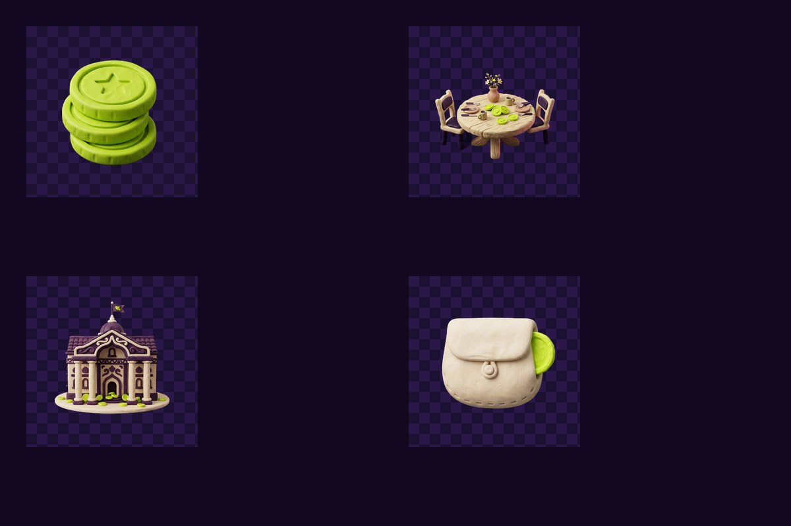
O cano não recorta
rembg, bg-vanish, qualquer wrapper: abrem o ONNX e devolvem máscara. Trocar o pacote sem trocar o modelo é teatro. u2net no cano A e u2net no cano B saem iguais. A qualidade mora no checkpoint.
Rodei tudo no Python, CPU, sem API. withoutbg pediu chave e saiu da mesa. Os outros baixam o ONNX na primeira chamada e ficam em disco.
O teste
Doze JPG de ícone 1:1. Clay lima, fundo roxo. Quatro deles cabem neste post: moedas, mesa de reunião, palácio, carteira. Em cada linha, a original e cinco recortes. Xadrez é transparência.
Da esquerda pra direita: original, u2net, isnet-anime, isnet-general-use, birefnet-massive, bria-rmbg.
Moedas
| original | u2net | isnet-anime | isnet-general-use | birefnet-massive | bria-rmbg |
|---|---|---|---|---|---|
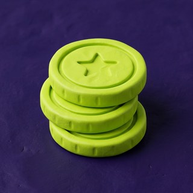 |
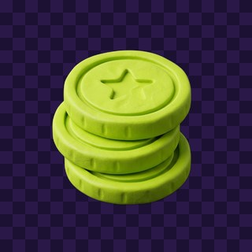 |
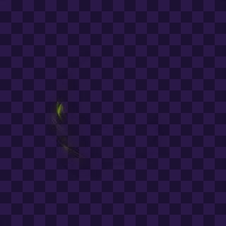 |
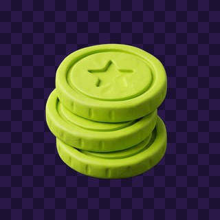 |
Objeto grosso, fundo liso. Quase todo mundo acerta. Aqui o empate engana. Ícone fácil não escolhe modelo.
Reunião
| original | u2net | isnet-anime | isnet-general-use | birefnet-massive | bria-rmbg |
|---|---|---|---|---|---|
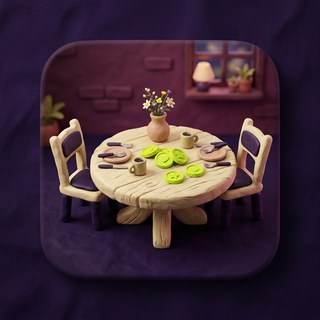 |
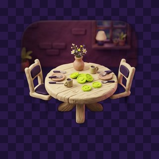 |
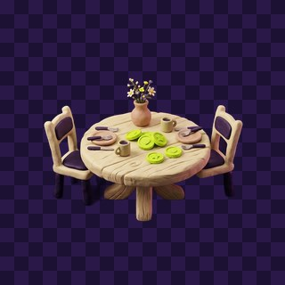 |
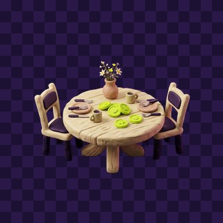 |
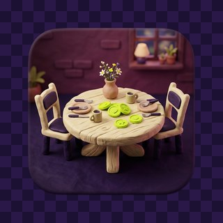 |
A foto trazia um card arredondado atrás da mesa. O modelo trata o card como fundo e some com ele. u2net ainda deixa halo roxo. isnet-anime come cadeira. isnet-general-use e birefnet-massive deixam mesa e cadeiras. O tile eu devolvo no CSS. Não peço isso de volta pro ONNX.
Palácio
| original | u2net | isnet-anime | isnet-general-use | birefnet-massive | bria-rmbg |
|---|---|---|---|---|---|
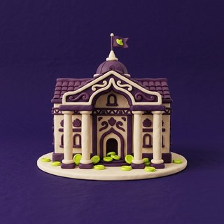 |
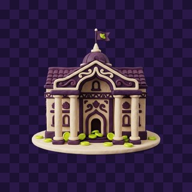 |
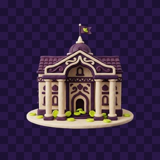 |
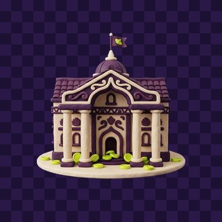 |
Base creme, torre, bandeira. Quase todos mantêm o volume. Diferença está na borda da grama e no mastro. Massive e bria mordem menos o céu.
Carteira
| original | u2net | isnet-anime | isnet-general-use | birefnet-massive | bria-rmbg |
|---|---|---|---|---|---|
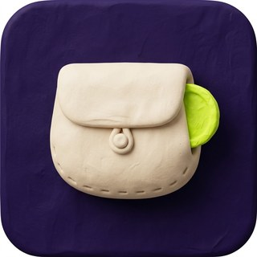 |
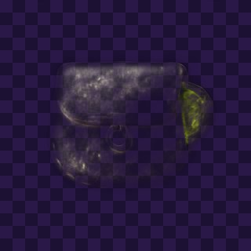 |
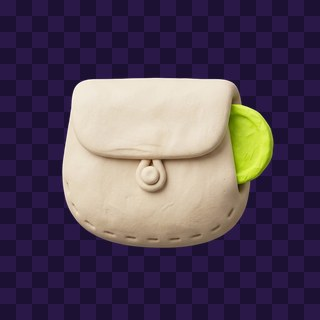 |
isnet-anime apaga o objeto. Vira mancha. Esse modelo existe pra ilustração. Clay 3D não é anime. Se o default do seu MCP for esse, o ícone some e você culpa o wrapper.
O que o olho decidiu
Olhei a tabela inteira, não o paper. Ranking neste set:
- isnet-general-use. Default. Clay e produto “bom o bastante”. Apache-2.0.
- birefnet-massive. Quase empate. Melhor em borda fina. MIT, uso comercial sem dor de cabeça.
- bria-rmbg (RMBG-2.0). Recorte mais limpo. Licença não comercial sem acordo com a Bria.
u2net fica pra máquina fraca. isnet-anime só se a arte for de fato anime. birefnet-general e portrait foram bem. Massive cobre o caso comercial, então não exponho os três da família no CLI.
API paga (remove.bg, Photoroom, withoutBG cloud) ainda ganha no pior caso: cabelo contra fundo bagunçado, vidro, reflexo. Pra ícone clay em fundo liso, o teto local chega.
Os três no CLI
Ficaram no comando. Default é o primeiro da lista.
webimg bg foto.jpg --out saida.png
webimg bg foto.jpg --out saida.png --model birefnet-massive
webimg bg foto.jpg --out saida.png --model bria-rmbg
Python por baixo: rembg[cpu], new_session(model). Primeira chamada baixa o ONNX. Massive pesa na casa de 1 GB. isnet cabe em uns 170 MB.
O PNG vai pro app sem o quadrado. O componente de ícone desenha o tile de novo: raio ~22%, fundo roxo, borda fina. Recorte é máscara. Moldura é layout.
Regra que ficou
Pessoal, máxima qualidade local: bria-rmbg. Produto que você vai vender: birefnet-massive. Ícone clay no dia a dia: isnet-general-use, e o arredondado no CSS.
Não discuta wrapper. Abra o mesmo arquivo nos três. Checkerboard. O olho escolhe em um minuto.